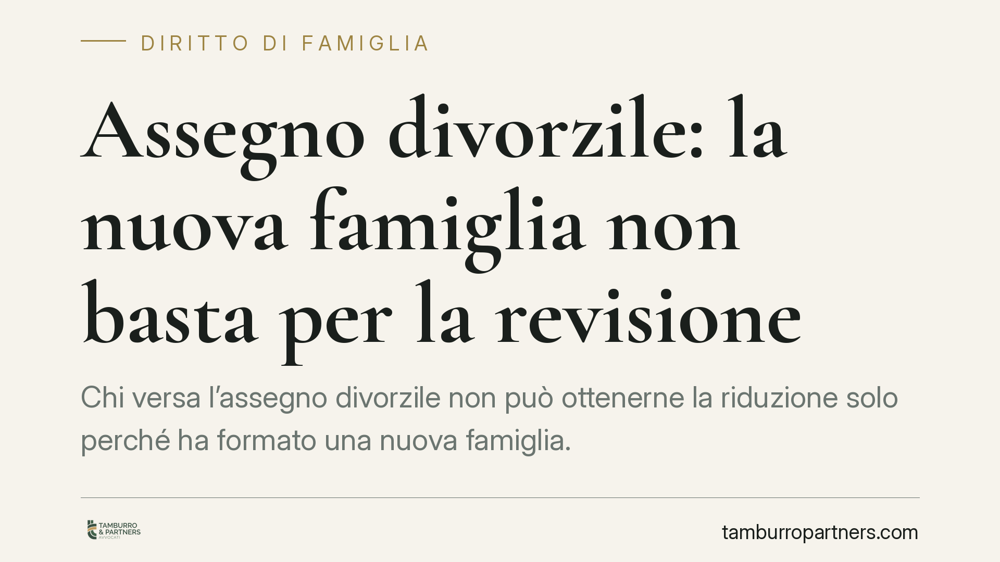

Assegno divorzile: la nuova famiglia non basta per la revisione
Chi versa l'assegno divorzile non può ottenerne la riduzione solo perché ha formato una nuova famiglia. Con una recente ordinanza la Cassazione ha confermato che la revisione richiede un mutamento sopravvenuto, effettivo e stabile delle condizioni economiche. Non bastano nuove spese o nuovi figli: occorre provare un reale deterioramento della capacità reddituale e patrimoniale.

Il principio ribadito dalla Corte
La Corte di Cassazione è tornata sul tema della revisione dell'assegno divorzile, respingendo la richiesta di un ex coniuge obbligato che chiedeva la riduzione del contributo in favore della prima ex moglie.
La motivazione addotta era la formazione di un nuovo nucleo familiare, con i connessi oneri economici. Un argomento ricorrente, ma che — da solo — non regge. La Corte, confermando la decisione della Corte d'Appello di Messina, ha chiarito che la nascita di nuovi legami affettivi e dei relativi carichi non determina alcuna riduzione automatica dell'assegno.
Inquadramento normativo
La disciplina è contenuta nell'art. 9 della Legge 898/1970, che consente la revisione dell'assegno divorzile — sia in aumento sia in diminuzione — quando sopravvengono "giustificati motivi". La giurisprudenza ha progressivamente delineato i contorni di questa formula: non ogni cambiamento rileva, ma solo il mutamento delle condizioni economiche delle parti che sia sopravvenuto, effettivo e stabile.
La scelta di costituire una nuova famiglia è una decisione personale e volontaria. Gli oneri che ne derivano — un nuovo coniuge, altri figli, un diverso tenore di vita — non possono essere traslati, in via automatica, sull'avente diritto al precedente assegno. In altri termini, la nuova famiglia non è di per sé un "giustificato motivo".
I tre requisiti del peggioramento rilevante
Perché la revisione sia concessa, il peggioramento della situazione economica dell'obbligato deve essere:
- reale e attuale: non ipotetico né meramente prospettico;
- stabile: una flessione temporanea o episodica non è sufficiente;
- misurabile: documentato attraverso dati patrimoniali e reddituali concreti.
Si tratta, in sostanza, di dimostrare un peggioramento effettivo, stabile e documentato della capacità reddituale e patrimoniale, non una semplice redistribuzione delle proprie spese.
L'onere della prova
Un aspetto spesso sottovalutato riguarda la ripartizione dell'onere probatorio. In base all'art. 2697 c.c., chi chiede la revisione — cioè l'obbligato che invoca la riduzione — deve provare i fatti sopravvenuti su cui fonda la domanda.
Non basta allegare genericamente nuovi impegni di spesa. Occorre fornire al giudice elementi oggettivi che attestino il deterioramento della propria capacità economica. In mancanza, la domanda viene respinta, come accaduto nel caso esaminato.
Implicazioni pratiche
Per chi versa l'assegno, il messaggio è netto: la revisione non è uno strumento per riequilibrare scelte di vita successive al divorzio. La formazione di una nuova famiglia non apre, da sola, alcuno spazio di riduzione.
Va inoltre ricordato che la revisione, quando concessa, opera ex nunc, cioè per il futuro: produce effetti dalla domanda in poi e non consente di recuperare quanto già versato. Questo rende ancora più importante presentare la richiesta solo quando si dispone di una base probatoria solida.
Per chi riceve l'assegno, la pronuncia conferma una tutela significativa: il contributo non può essere eroso in ragione delle nuove scelte dell'ex coniuge, ma resta agganciato a un confronto oggettivo tra le rispettive condizioni economiche.
Cosa fare in concreto
- Documentate il mutamento economico. Raccogliete dichiarazioni dei redditi, buste paga, estratti conto e documentazione patrimoniale che dimostrino un peggioramento effettivo e non temporaneo.
- Distinguete il calo di capacità dall'aumento delle spese. La nascita di nuovi oneri non equivale a una riduzione della capacità reddituale: concentrate la prova su quest'ultima.
- Valutate la stabilità del cambiamento. Prima di agire, verificate che la nuova condizione economica sia consolidata e non reversibile nel breve periodo.
- Considerate l'efficacia per il futuro. Ricordate che la revisione decorre dalla domanda: consigliamo di non ritardare l'istanza una volta maturati i presupposti.
- Fate valutare preventivamente il caso. Una stima realistica delle probabilità di accoglimento evita iniziative giudiziarie destinate al rigetto e alle relative spese.
Contributo informativo a cura di Tamburro & Partners Avvocati – Avv. Giuseppe Tamburro. Non costituisce parere legale.
Ogni famiglia ha il suo equilibrio.
Separazione, divorzio, affidamento, assegno: se vuoi un confronto riservato su una specifica situazione, scrivi allo studio. Ti rispondiamo entro un giorno lavorativo.